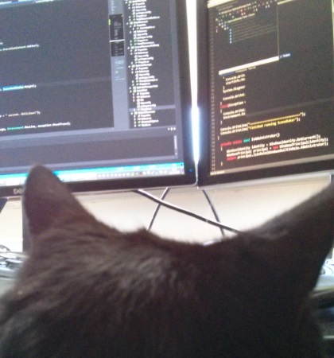
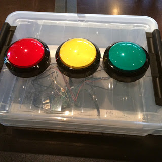

type Colour =
{r: byte;
g: byte;
b: byte;
a: byte;}
Full name: index.Colour
{r: byte;
g: byte;
b: byte;
a: byte;}
Full name: index.Colour
Colour.r: byte
Multiple items
val byte : value:'T -> byte (requires member op_Explicit)
Full name: Microsoft.FSharp.Core.Operators.byte
--------------------
type byte = System.Byte
Full name: Microsoft.FSharp.Core.byte
val byte : value:'T -> byte (requires member op_Explicit)
Full name: Microsoft.FSharp.Core.Operators.byte
--------------------
type byte = System.Byte
Full name: Microsoft.FSharp.Core.byte
Colour.g: byte
Colour.b: byte
Colour.a: byte
val addTwo : c1:Colour -> c2:Colour -> Colour
Full name: index.addTwo
Full name: index.addTwo
val c1 : Colour
val c2 : Colour
val addColours' : colours:Colour list -> Colour
Full name: index.addColours'
Full name: index.addColours'
val colours : Colour list
type 'T list = List<'T>
Full name: Microsoft.FSharp.Collections.list<_>
Full name: Microsoft.FSharp.Collections.list<_>
val mutable res : Colour
val i : Colour
type Monoid<'a> =
{neutral: 'a;
op: 'a -> 'a -> 'a;}
Full name: index.Monoid<_>
{neutral: 'a;
op: 'a -> 'a -> 'a;}
Full name: index.Monoid<_>
Monoid.neutral: 'a
Monoid.op: 'a -> 'a -> 'a
val neutral : Colour
Full name: index.neutral
Full name: index.neutral
val colourAdd : Monoid<Colour>
Full name: index.colourAdd
Full name: index.colourAdd
val c1 : Colour
Full name: index.c1
Full name: index.c1
val c2 : Colour
Full name: index.c2
Full name: index.c2
val l : Colour
Full name: index.l
Full name: index.l
Multiple items
module List
from Microsoft.FSharp.Collections
--------------------
type List<'T> =
| ( [] )
| ( :: ) of Head: 'T * Tail: 'T list
interface IEnumerable
interface IEnumerable<'T>
member Head : 'T
member IsEmpty : bool
member Item : index:int -> 'T with get
member Length : int
member Tail : 'T list
static member Cons : head:'T * tail:'T list -> 'T list
static member Empty : 'T list
Full name: Microsoft.FSharp.Collections.List<_>
module List
from Microsoft.FSharp.Collections
--------------------
type List<'T> =
| ( [] )
| ( :: ) of Head: 'T * Tail: 'T list
interface IEnumerable
interface IEnumerable<'T>
member Head : 'T
member IsEmpty : bool
member Item : index:int -> 'T with get
member Length : int
member Tail : 'T list
static member Cons : head:'T * tail:'T list -> 'T list
static member Empty : 'T list
Full name: Microsoft.FSharp.Collections.List<_>
val reduce : reduction:('T -> 'T -> 'T) -> list:'T list -> 'T
Full name: Microsoft.FSharp.Collections.List.reduce
Full name: Microsoft.FSharp.Collections.List.reduce
type T = Colour
Full name: index.T
Full name: index.T
val M : Monoid<Colour>
Full name: index.M
Full name: index.M
val Z : Colour
Full name: index.Z
Full name: index.Z
Monoid.neutral: Colour
Monoid.op: Colour -> Colour -> Colour
val ( Z is the neutral element ) : v:T -> bool
Full name: index.( Z is the neutral element )
Full name: index.( Z is the neutral element )
val v : T
val ( The op is associative ) : a:T * b:T * c:T -> bool
Full name: index.( The op is associative )
Full name: index.( The op is associative )
val a : T
val b : T
val c : T
val division : a:int -> b:int -> c:int -> d:int -> int option
Full name: index.division
Full name: index.division
val a : int
val b : int
val c : int
val d : int
union case Option.None: Option<'T>
union case Option.Some: Value: 'T -> Option<'T>
val divide : a:int -> b:int -> int option
Full name: index.divide
Full name: index.divide
Multiple items
type MaybeBuilder =
new : unit -> MaybeBuilder
member Bind : value:'b option * func:('b -> 'c option) -> 'c option
member Return : value:'a -> 'a option
Full name: index.MaybeBuilder
--------------------
new : unit -> MaybeBuilder
type MaybeBuilder =
new : unit -> MaybeBuilder
member Bind : value:'b option * func:('b -> 'c option) -> 'c option
member Return : value:'a -> 'a option
Full name: index.MaybeBuilder
--------------------
new : unit -> MaybeBuilder
member MaybeBuilder.Bind : value:'b option * func:('b -> 'c option) -> 'c option
Full name: index.MaybeBuilder.Bind
Full name: index.MaybeBuilder.Bind
val value : 'b option
val func : ('b -> 'c option)
val value : 'b
val __ : MaybeBuilder
member MaybeBuilder.Return : value:'a -> 'a option
Full name: index.MaybeBuilder.Return
Full name: index.MaybeBuilder.Return
val value : 'a
val maybe : MaybeBuilder
Full name: index.maybe
Full name: index.maybe
val divisionM : a:int -> b:int -> c:int -> d:int -> int option
Full name: index.divisionM
Full name: index.divisionM
val x : int
val y : int
val z : int
val ( monad laws ) : unit -> 'a
Full name: index.( monad laws )
Full name: index.( monad laws )
val ret : (int -> 'b)
Multiple items
val int : value:'T -> int (requires member op_Explicit)
Full name: Microsoft.FSharp.Core.Operators.int
--------------------
type int = int32
Full name: Microsoft.FSharp.Core.int
--------------------
type int<'Measure> = int
Full name: Microsoft.FSharp.Core.int<_>
val int : value:'T -> int (requires member op_Explicit)
Full name: Microsoft.FSharp.Core.Operators.int
--------------------
type int = int32
Full name: Microsoft.FSharp.Core.int
--------------------
type int<'Measure> = int
Full name: Microsoft.FSharp.Core.int<_>
val n : (string -> string)
val sprintf : format:Printf.StringFormat<'T> -> 'T
Full name: Microsoft.FSharp.Core.ExtraTopLevelOperators.sprintf
Full name: Microsoft.FSharp.Core.ExtraTopLevelOperators.sprintf
val m : 'b
val f : 'c
val f : (int -> obj)
val x : obj
val f : (obj -> obj)
val g : obj
val v : obj
val a : obj
val b : obj
namespace System
val sleepWorkflow : Async<unit>
Full name: index.sleepWorkflow
Full name: index.sleepWorkflow
val async : AsyncBuilder
Full name: Microsoft.FSharp.Core.ExtraTopLevelOperators.async
Full name: Microsoft.FSharp.Core.ExtraTopLevelOperators.async
val printfn : format:Printf.TextWriterFormat<'T> -> 'T
Full name: Microsoft.FSharp.Core.ExtraTopLevelOperators.printfn
Full name: Microsoft.FSharp.Core.ExtraTopLevelOperators.printfn
Multiple items
type DateTime =
struct
new : ticks:int64 -> DateTime + 10 overloads
member Add : value:TimeSpan -> DateTime
member AddDays : value:float -> DateTime
member AddHours : value:float -> DateTime
member AddMilliseconds : value:float -> DateTime
member AddMinutes : value:float -> DateTime
member AddMonths : months:int -> DateTime
member AddSeconds : value:float -> DateTime
member AddTicks : value:int64 -> DateTime
member AddYears : value:int -> DateTime
...
end
Full name: System.DateTime
--------------------
DateTime()
(+0 other overloads)
DateTime(ticks: int64) : unit
(+0 other overloads)
DateTime(ticks: int64, kind: DateTimeKind) : unit
(+0 other overloads)
DateTime(year: int, month: int, day: int) : unit
(+0 other overloads)
DateTime(year: int, month: int, day: int, calendar: Globalization.Calendar) : unit
(+0 other overloads)
DateTime(year: int, month: int, day: int, hour: int, minute: int, second: int) : unit
(+0 other overloads)
DateTime(year: int, month: int, day: int, hour: int, minute: int, second: int, kind: DateTimeKind) : unit
(+0 other overloads)
DateTime(year: int, month: int, day: int, hour: int, minute: int, second: int, calendar: Globalization.Calendar) : unit
(+0 other overloads)
DateTime(year: int, month: int, day: int, hour: int, minute: int, second: int, millisecond: int) : unit
(+0 other overloads)
DateTime(year: int, month: int, day: int, hour: int, minute: int, second: int, millisecond: int, kind: DateTimeKind) : unit
(+0 other overloads)
type DateTime =
struct
new : ticks:int64 -> DateTime + 10 overloads
member Add : value:TimeSpan -> DateTime
member AddDays : value:float -> DateTime
member AddHours : value:float -> DateTime
member AddMilliseconds : value:float -> DateTime
member AddMinutes : value:float -> DateTime
member AddMonths : months:int -> DateTime
member AddSeconds : value:float -> DateTime
member AddTicks : value:int64 -> DateTime
member AddYears : value:int -> DateTime
...
end
Full name: System.DateTime
--------------------
DateTime()
(+0 other overloads)
DateTime(ticks: int64) : unit
(+0 other overloads)
DateTime(ticks: int64, kind: DateTimeKind) : unit
(+0 other overloads)
DateTime(year: int, month: int, day: int) : unit
(+0 other overloads)
DateTime(year: int, month: int, day: int, calendar: Globalization.Calendar) : unit
(+0 other overloads)
DateTime(year: int, month: int, day: int, hour: int, minute: int, second: int) : unit
(+0 other overloads)
DateTime(year: int, month: int, day: int, hour: int, minute: int, second: int, kind: DateTimeKind) : unit
(+0 other overloads)
DateTime(year: int, month: int, day: int, hour: int, minute: int, second: int, calendar: Globalization.Calendar) : unit
(+0 other overloads)
DateTime(year: int, month: int, day: int, hour: int, minute: int, second: int, millisecond: int) : unit
(+0 other overloads)
DateTime(year: int, month: int, day: int, hour: int, minute: int, second: int, millisecond: int, kind: DateTimeKind) : unit
(+0 other overloads)
property DateTime.Now: DateTime
property DateTime.TimeOfDay: TimeSpan
Multiple items
type Async
static member AsBeginEnd : computation:('Arg -> Async<'T>) -> ('Arg * AsyncCallback * obj -> IAsyncResult) * (IAsyncResult -> 'T) * (IAsyncResult -> unit)
static member AwaitEvent : event:IEvent<'Del,'T> * ?cancelAction:(unit -> unit) -> Async<'T> (requires delegate and 'Del :> Delegate)
static member AwaitIAsyncResult : iar:IAsyncResult * ?millisecondsTimeout:int -> Async<bool>
static member AwaitTask : task:Task<'T> -> Async<'T>
static member AwaitWaitHandle : waitHandle:WaitHandle * ?millisecondsTimeout:int -> Async<bool>
static member CancelDefaultToken : unit -> unit
static member Catch : computation:Async<'T> -> Async<Choice<'T,exn>>
static member FromBeginEnd : beginAction:(AsyncCallback * obj -> IAsyncResult) * endAction:(IAsyncResult -> 'T) * ?cancelAction:(unit -> unit) -> Async<'T>
static member FromBeginEnd : arg:'Arg1 * beginAction:('Arg1 * AsyncCallback * obj -> IAsyncResult) * endAction:(IAsyncResult -> 'T) * ?cancelAction:(unit -> unit) -> Async<'T>
static member FromBeginEnd : arg1:'Arg1 * arg2:'Arg2 * beginAction:('Arg1 * 'Arg2 * AsyncCallback * obj -> IAsyncResult) * endAction:(IAsyncResult -> 'T) * ?cancelAction:(unit -> unit) -> Async<'T>
static member FromBeginEnd : arg1:'Arg1 * arg2:'Arg2 * arg3:'Arg3 * beginAction:('Arg1 * 'Arg2 * 'Arg3 * AsyncCallback * obj -> IAsyncResult) * endAction:(IAsyncResult -> 'T) * ?cancelAction:(unit -> unit) -> Async<'T>
static member FromContinuations : callback:(('T -> unit) * (exn -> unit) * (OperationCanceledException -> unit) -> unit) -> Async<'T>
static member Ignore : computation:Async<'T> -> Async<unit>
static member OnCancel : interruption:(unit -> unit) -> Async<IDisposable>
static member Parallel : computations:seq<Async<'T>> -> Async<'T []>
static member RunSynchronously : computation:Async<'T> * ?timeout:int * ?cancellationToken:CancellationToken -> 'T
static member Sleep : millisecondsDueTime:int -> Async<unit>
static member Start : computation:Async<unit> * ?cancellationToken:CancellationToken -> unit
static member StartAsTask : computation:Async<'T> * ?taskCreationOptions:TaskCreationOptions * ?cancellationToken:CancellationToken -> Task<'T>
static member StartChild : computation:Async<'T> * ?millisecondsTimeout:int -> Async<Async<'T>>
static member StartChildAsTask : computation:Async<'T> * ?taskCreationOptions:TaskCreationOptions -> Async<Task<'T>>
static member StartImmediate : computation:Async<unit> * ?cancellationToken:CancellationToken -> unit
static member StartWithContinuations : computation:Async<'T> * continuation:('T -> unit) * exceptionContinuation:(exn -> unit) * cancellationContinuation:(OperationCanceledException -> unit) * ?cancellationToken:CancellationToken -> unit
static member SwitchToContext : syncContext:SynchronizationContext -> Async<unit>
static member SwitchToNewThread : unit -> Async<unit>
static member SwitchToThreadPool : unit -> Async<unit>
static member TryCancelled : computation:Async<'T> * compensation:(OperationCanceledException -> unit) -> Async<'T>
static member CancellationToken : Async<CancellationToken>
static member DefaultCancellationToken : CancellationToken
Full name: Microsoft.FSharp.Control.Async
--------------------
type Async<'T>
Full name: Microsoft.FSharp.Control.Async<_>
type Async
static member AsBeginEnd : computation:('Arg -> Async<'T>) -> ('Arg * AsyncCallback * obj -> IAsyncResult) * (IAsyncResult -> 'T) * (IAsyncResult -> unit)
static member AwaitEvent : event:IEvent<'Del,'T> * ?cancelAction:(unit -> unit) -> Async<'T> (requires delegate and 'Del :> Delegate)
static member AwaitIAsyncResult : iar:IAsyncResult * ?millisecondsTimeout:int -> Async<bool>
static member AwaitTask : task:Task<'T> -> Async<'T>
static member AwaitWaitHandle : waitHandle:WaitHandle * ?millisecondsTimeout:int -> Async<bool>
static member CancelDefaultToken : unit -> unit
static member Catch : computation:Async<'T> -> Async<Choice<'T,exn>>
static member FromBeginEnd : beginAction:(AsyncCallback * obj -> IAsyncResult) * endAction:(IAsyncResult -> 'T) * ?cancelAction:(unit -> unit) -> Async<'T>
static member FromBeginEnd : arg:'Arg1 * beginAction:('Arg1 * AsyncCallback * obj -> IAsyncResult) * endAction:(IAsyncResult -> 'T) * ?cancelAction:(unit -> unit) -> Async<'T>
static member FromBeginEnd : arg1:'Arg1 * arg2:'Arg2 * beginAction:('Arg1 * 'Arg2 * AsyncCallback * obj -> IAsyncResult) * endAction:(IAsyncResult -> 'T) * ?cancelAction:(unit -> unit) -> Async<'T>
static member FromBeginEnd : arg1:'Arg1 * arg2:'Arg2 * arg3:'Arg3 * beginAction:('Arg1 * 'Arg2 * 'Arg3 * AsyncCallback * obj -> IAsyncResult) * endAction:(IAsyncResult -> 'T) * ?cancelAction:(unit -> unit) -> Async<'T>
static member FromContinuations : callback:(('T -> unit) * (exn -> unit) * (OperationCanceledException -> unit) -> unit) -> Async<'T>
static member Ignore : computation:Async<'T> -> Async<unit>
static member OnCancel : interruption:(unit -> unit) -> Async<IDisposable>
static member Parallel : computations:seq<Async<'T>> -> Async<'T []>
static member RunSynchronously : computation:Async<'T> * ?timeout:int * ?cancellationToken:CancellationToken -> 'T
static member Sleep : millisecondsDueTime:int -> Async<unit>
static member Start : computation:Async<unit> * ?cancellationToken:CancellationToken -> unit
static member StartAsTask : computation:Async<'T> * ?taskCreationOptions:TaskCreationOptions * ?cancellationToken:CancellationToken -> Task<'T>
static member StartChild : computation:Async<'T> * ?millisecondsTimeout:int -> Async<Async<'T>>
static member StartChildAsTask : computation:Async<'T> * ?taskCreationOptions:TaskCreationOptions -> Async<Task<'T>>
static member StartImmediate : computation:Async<unit> * ?cancellationToken:CancellationToken -> unit
static member StartWithContinuations : computation:Async<'T> * continuation:('T -> unit) * exceptionContinuation:(exn -> unit) * cancellationContinuation:(OperationCanceledException -> unit) * ?cancellationToken:CancellationToken -> unit
static member SwitchToContext : syncContext:SynchronizationContext -> Async<unit>
static member SwitchToNewThread : unit -> Async<unit>
static member SwitchToThreadPool : unit -> Async<unit>
static member TryCancelled : computation:Async<'T> * compensation:(OperationCanceledException -> unit) -> Async<'T>
static member CancellationToken : Async<CancellationToken>
static member DefaultCancellationToken : CancellationToken
Full name: Microsoft.FSharp.Control.Async
--------------------
type Async<'T>
Full name: Microsoft.FSharp.Control.Async<_>
static member Async.Sleep : millisecondsDueTime:int -> Async<unit>
static member Async.RunSynchronously : computation:Async<'T> * ?timeout:int * ?cancellationToken:Threading.CancellationToken -> 'T
type Environment =
static member CommandLine : string
static member CurrentDirectory : string with get, set
static member Exit : exitCode:int -> unit
static member ExitCode : int with get, set
static member ExpandEnvironmentVariables : name:string -> string
static member FailFast : message:string -> unit + 1 overload
static member GetCommandLineArgs : unit -> string[]
static member GetEnvironmentVariable : variable:string -> string + 1 overload
static member GetEnvironmentVariables : unit -> IDictionary + 1 overload
static member GetFolderPath : folder:SpecialFolder -> string + 1 overload
...
nested type SpecialFolder
nested type SpecialFolderOption
Full name: System.Environment
static member CommandLine : string
static member CurrentDirectory : string with get, set
static member Exit : exitCode:int -> unit
static member ExitCode : int with get, set
static member ExpandEnvironmentVariables : name:string -> string
static member FailFast : message:string -> unit + 1 overload
static member GetCommandLineArgs : unit -> string[]
static member GetEnvironmentVariable : variable:string -> string + 1 overload
static member GetEnvironmentVariables : unit -> IDictionary + 1 overload
static member GetFolderPath : folder:SpecialFolder -> string + 1 overload
...
nested type SpecialFolder
nested type SpecialFolderOption
Full name: System.Environment
property Environment.MachineName: string
Computation expressions in context : a history of the otter king
NDC Oslo 2015
Andrea Magnorsky
Digital Furnace Games ▀ BatCat Games ▀ GameCraft Foundation
- @SilverSpoon
- roundcrisis.com
OniKira: Demon Killer
Disclaimer : Some pictures I show here have absolutely nothing to do with what I will be talking about
so ask questions if confused ;)... it might still make no sense, but that is ok.
Monads

Comprehending Monads
Monads for functional programming

Some not-useful-right-away info
- There is a strong link between monads and category theory
- Monads have 3 monadic laws that every monad must satisfy:
- Left identity
- Right identity and
- Associativity
Monads eh? talk to the otter king

Monoids
- Convert pairwise operations into work in collections
- Parallelization and Incrementalism
Monoids
- Closures \(a' \rightarrow a' \rightarrow a'\) (example int -> int -> int )
- Identity \(x + I = x\)
- Associativity \(x + (y + z) = (x + y ) + z\)
1: 2: 3: 4: 5: 6: 7: 8: 9: 10: 11: 12: 13: 14: |
type Colour = { r: byte; g: byte; b: byte; a: byte } let addTwo c1 c2 = { r = c1.r + c2.r g = c1.g + c2.g b = c1.b + c2.b a = c1.a + c2.a } let addColours' (colours: Colour list) = //MUTABLE OMG!! let mutable res = { r = 0uy; g = 0uy;b = 0uy;a = 0uy} for i in colours do res <- add res i res |
1: 2: 3: |
type Monoid<'a> = { neutral : 'a op : 'a -> 'a -> 'a } |
1: 2: 3: 4: 5: 6: |
let neutral = { r = 0uy; g = 0uy; b = 0uy; a = 0uy } let colourAdd : Monoid<Colour> = { neutral = neutral op = (addTwo) } |
1: 2: 3: 4: 5: |
let c1 = { neutral with g = 254uy } let c2 = { neutral with r = 254uy } let l = [ c1; c2; neutral ] |> List.reduce (addTwo) |
Oh, yes and you can property check that your type is a monoid!!
1: 2: 3: 4: 5: 6: 7: 8: 9: 10: 11: 12: 13: |
type T = Colour let M = colourAdd let Z = M.neutral let (++) = M.op [<Property>] let `` Z is the neutral element`` (v : T) = Z ++ v = v && v ++ Z = v [<Property>] let ``The op is associative`` (a : T, b : T, c : T) = a ++ (b ++ c) = (a ++ b ++ c) |

Enjoy my favourite picture (of myself)
The king will help...
A monad is a monoid in the category of endofunctors.
A monad is like a burrito.
Think of monads just like you would think about Legos.


Errors
1: 2: 3: 4: 5: 6: 7: 8: |
let division a b c d= match b with | 0 -> None | _ -> match c with | 0 -> None | _ -> match d with | 0 -> None | _ -> Some (((a/b)/c)/d) |
1. Extract the core
1: 2: 3: 4: |
let divide a b = match b with | 0 -> None | _ -> Some (a/b ) |
2. ???
1: 2: 3: 4: 5: 6: |
type MaybeBuilder() = member __.Bind(value, func) = match value with | Some value -> func value | None -> None member __.Return value = Some value |
3. profit
1: 2: 3: 4: 5: 6: 7: 8: 9: |
let maybe = MaybeBuilder() let divisionM a b c d= maybe{ let! x = divide a b let! y = divide x c let! z = divide y d return z } |
lets decompose that a little bit
Magic?, Illusion Michael
Bind applies
return converts to wrapped
1: 2: 3: 4: 5: 6: 7: 8: 9: 10: 11: 12: 13: 14: 15: 16: 17: |
open FsCheck open FsCheck.NUnit [<Test>] let ``monad laws``() = let ret (x: int) = choose.Return x let n = sprintf "Choice : monad %s" let inline (>>=) m f = choose.Bind(m,f) fsCheck "left identity" <| fun f a -> ret a >>= f = f a fsCheck "right identity" <| fun x -> x >>= ret = x fsCheck "associativity" <| fun f g v -> let a = (v >>= f) >>= g let b = v >>= (fun x -> f x >>= g) a = b |
Why learn this?
Computation Expressions
Most monads are computation expressions, not all computation expressions are monads
let, for and try .. with, but with a different semantics
Computation expressions or workflows
Computation expressions have been available in F# since 2007 and they are fully documented in the F# language specification
- Abstract computations
- Handling of effects
async
1: 2: 3: 4: 5: 6: 7: 8: 9: |
open System let sleepWorkflow = async{ printfn "Starting sleep workflow at %O" DateTime.Now.TimeOfDay do! Async.Sleep 2000 printfn "Finished sleep workflow at %O" DateTime.Now.TimeOfDay } Async.RunSynchronously sleepWorkflow |
mbrace
1: 2: 3: 4: 5: |
let job = cloud { return sprintf "run in the cloud on worker '%s' " Environment.MachineName } |> runtime.CreateProcess |
It doesn't matter what things are
the otter king in his human form
Vote!

Next talks suggestion
- Mark Seemann “Type Driven Development”
- José Valim “Idioms for building distributed fault-tolerant applications w/ Elixir”
- Jeremie Chassing "Functional event sourcing"
- Mathias Brandewinder “Crunching through big data with MBrace, Azure and F#”
And many more :D
Thanks :D

- @SilverSpoon
- roundcrisis.com
Resources
- Abstraction, intuition, and the “monad tutorial fallacy”
- The "What are monads?" fallacy
- Beyond Foundations of F# - Workflows
- Monads, Arrows and idioms papers here.
- Why a monad is like a writing desk Video
- Understanding Monoids F# for fun and profit on monoids
- Understanding Monoids using F# From gettingsharp-er :)
- Syntax Matters: Writing abstract computations in F# paper by Tomas Petricek and Don Syme about computation expressions
- Monads explained from a maths point of view Video
- Comprehending Monads P.Wadler paper
- Monads for functional programming P.Wadler paper
- F# language specification
- Try Joinads F# research extension for concurrent, parallel and asynchronous programming.
- Functors Applicatives and monads in pictures